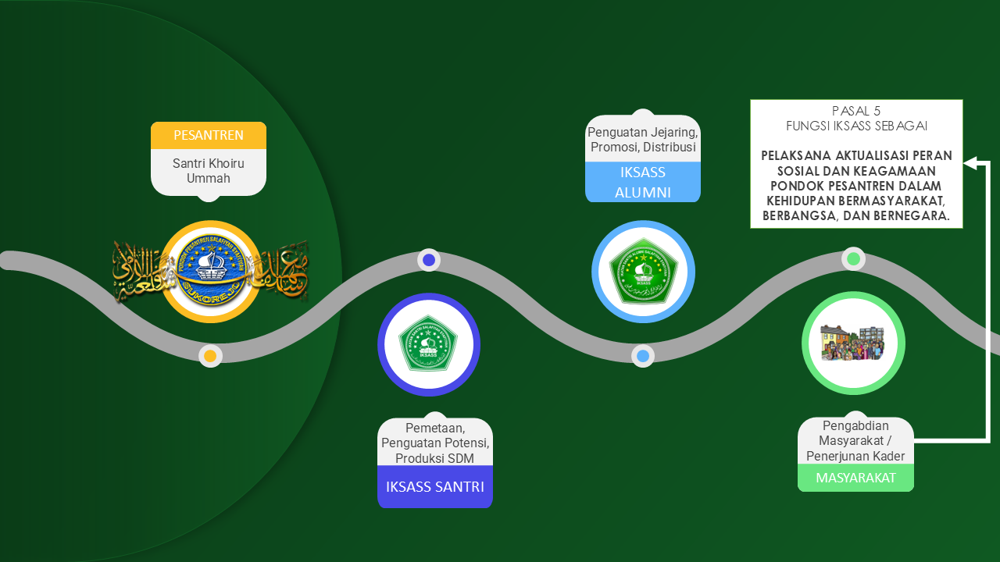

1
Optimalisasi komunikasi
Menguatkan komunikasi antarsantri, alumni, wali santri, dan simpatisan di bidang dakwah, pendidikan, sosial, dan ekonomi.
Garis-garis Besar Program Perjuangan dan Pengabdian sebagai kompas nilai, peta kaderisasi, dan arah khidmah organisasi.
IKSASS bukan sekadar wadah berhimpunnya santri dan alumni, tetapi alat perjuangan pondok pesantren untuk mengaktualisasikan peran sosial-keagamaan, memperkuat silaturahim, menghimpun potensi kader, dan menyalurkan manfaatnya bagi umat, bangsa, dan negara.
Karena itu, seluruh gerak organisasi harus berpijak pada sanad nilai pesantren, disiplin kaderisasi, penguatan kelembagaan, dan keberanian menghadirkan manfaat yang terukur di tengah masyarakat. Halaman ini menjabarkan peta besar tersebut dalam bentuk visual, bidang gerak, serta simulasi Segitiga Emas yang menghubungkan Pesantren, Alumni, dan Masyarakat.
Visual ini merangkum arus perjuangan IKSASS: pesantren melahirkan santri khoiru ummah, alumni memperkuat jejaring dan distribusi kader, lalu masyarakat menjadi ladang pengabdian yang menerima manfaat nyata dari gerak yang tertata.

Melahirkan kader yang berilmu, beradab, dan siap memikul amanat perjuangan.
Menghubungkan potensi, memperkuat promosi, jejaring, distribusi kader, dan kerja kolektif.
Menjadi ruang aktualisasi perjuangan sosial, pendidikan, keagamaan, dan ekonomi.
Organisasi ini harus melahirkan kader yang religius, mandiri, militan, dan humanis; teguh menjaga marwah pesantren, namun lincah merespons kebutuhan zaman. Militansi IKSASS bukan militansi yang gaduh, melainkan militansi yang tertib, kolektif, bertanggung jawab, dan tunduk pada akhlak organisasi.
Menguatkan komunikasi antarsantri, alumni, wali santri, dan simpatisan di bidang dakwah, pendidikan, sosial, dan ekonomi.
Mengawal kiprah alumni agar tetap berada pada khittah ma’hadiyah dan tidak tercerabut dari ruh pesantren.
Menjalankan ikhtiar organisasi yang tidak bertentangan dengan tujuan IKSASS, pesantren, dan perundang-undangan negara.
Menjadikan potensi kader sebagai sumber penguatan dan pengembangan organisasi sekaligus penopang pesantren.
Menegakkan konsep kaderisasi kolektif untuk melahirkan kader kritis, progresif, transformatif, dan peka terhadap nilai keadilan, musyawarah, kebebasan yang bertanggung jawab, dan persamaan.
Membentuk organisasi yang sehat, kondusif, penuh ukhuwah, serta memiliki kapasitas, jaringan informasi, dan relasi strategis yang dibangun dengan kejujuran dan kebersamaan.
Mendorong sistem pendidikan yang lebih komprehensif, penguatan manajemen pendidikan, pemberdayaan SDM, serta perluasan akses pendidikan yang bermutu tinggi.
Memantapkan agama sebagai landasan moral, spiritual, dan etika hidup, seraya menumbuhkan kerukunan dan kelembagaan keagamaan yang responsif terhadap dinamika sosial.
Mengarah pada terbentuknya masyarakat yang harmonis, sadar hak dan kewajiban, agamis, berdaya, sejahtera, serta memberi ruang aktualisasi yang adil bagi semua unsur masyarakat.
Membangun jaringan pemasaran, menguatkan sentra produksi kecil dan menengah, menumbuhkan kewirausahaan, dan mendorong lahirnya lembaga ekonomi Islam yang berdaya tahan.
Menjaga tradisi dan nilai lokal yang tidak bertentangan dengan agama, sekaligus mengawal proses adaptasinya agar tetap relevan dengan perkembangan zaman.
Meneguhkan politik kebangsaan yang memperkuat NKRI, menjaga jarak kelembagaan dari kepentingan partai, dan mengarahkan partisipasi warga secara bertanggung jawab.
Segitiga Emas menegaskan bahwa perjuangan IKSASS tidak boleh putus di salah satu simpul. Pesantren menjadi pusat produksi nilai dan kader, alumni menjadi penggerak potensi serta distribusi peran, dan masyarakat menjadi ruang di mana seluruh buah perjuangan itu harus terasa.
Jika salah satu titik melemah, mata rantai perjuangan ikut goyah. Karena itu, IKSASS wajib menjaga keseimbangan: kuat dalam pembinaan, rapi dalam pengorganisasian, dan nyata dalam pengabdian.

Melahirkan SDM santri yang khoiru ummah: kuat akidahnya, jernih ilmunya, tertib akhlaknya, dan siap mengemban amanat sosial.
Melakukan pemetaan, penguatan potensi, perluasan jejaring, promosi, dan distribusi kader agar tenaga perjuangan tersambung ke ruang-ruang strategis.
Menjadi ladang pengabdian di mana kader membawa manfaat: dakwah yang menyejukkan, pendidikan yang mencerahkan, ekonomi yang menguatkan, dan sosial yang mempersaudarakan.
Pada akhirnya, arah gerak perjuangan IKSASS harus dibaca sebagai panggilan kolektif: mengikat hati dalam silaturahim, meneguhkan langkah dalam organisasi, serta menyalurkan tenaga dan pikiran untuk kepentingan pesantren dan masyarakat. Organisasi akan kuat bila kadernya tumbuh, jejaringnya hidup, dan pengabdiannya nyata.